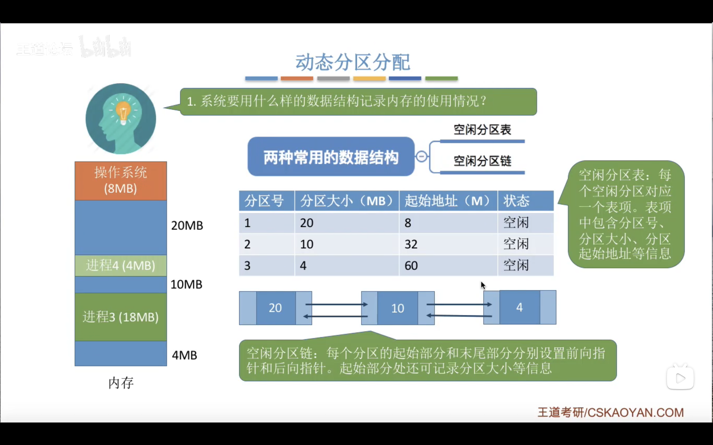
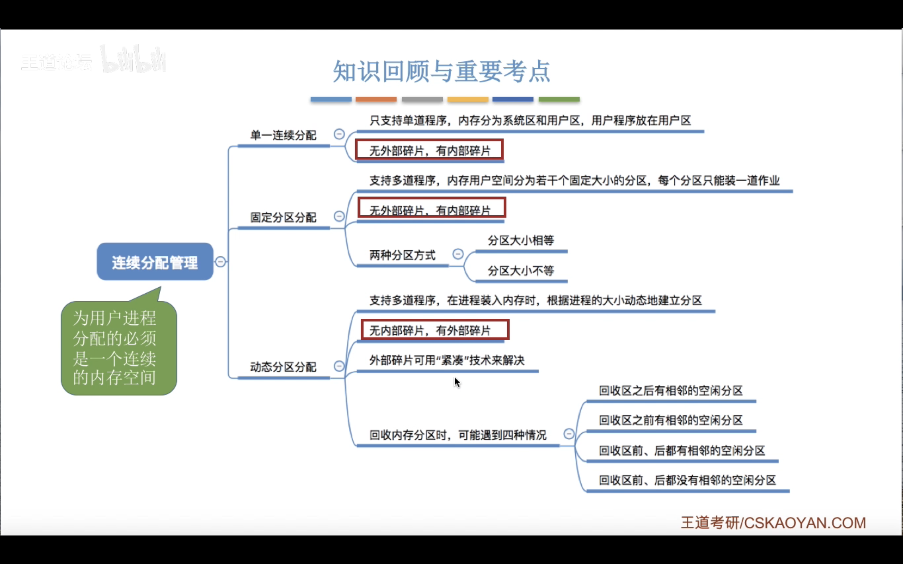
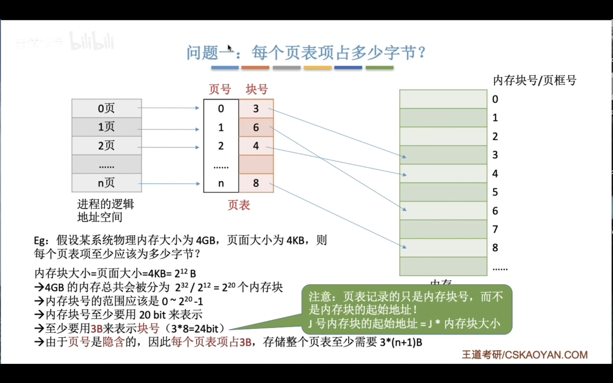
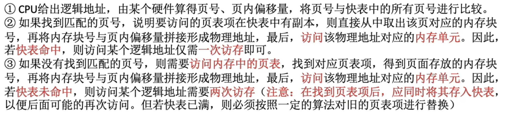

内存管理¶
内存可以存储数据,程序执行之前需要放进内存中--缓和 cpu 和硬盘之间速度的矛盾
按字节编址那么每个存储单元的大小就是 1b,也就是 8 个 二进制位
按字编址,每个存储单位就是一个字的大小(如果计算机字长是16 位,那就是 16 个二进制位 )
单位¶
\(1GB=2^{10}MB=1024MB=2^{20}KB={1024}^2KB=2^{30}B\)
内存管理的概念¶
内存空间的扩充¶
覆盖技术¶
覆盖技术的思想:将程序分成多个段,常用的部分常驻内存,不常用的部分需要的时候调入内存

交换技术¶
内存空间紧张的时候,把内存中某些进程暂时调出外存,把外存中某些具备运行条件的进程换入内存

总结¶
内存分配¶
连续分配¶
为用户分配的是连续空间
单一连续分配:¶

固定分区分配¶
动态分区分配¶
记录内存使用情况 
如何选择分区分配
分配和回收
内部碎片:分配给某个进程的内存中,某些部分没有被进程使用
外部碎片:内存中的某些空闲分区由于太小而难以利用
总结¶

动态分区分配算法¶
首次适应算法¶
每次都从低地址开始查找,直到找到满足大小的空闲分区
实现方法:空闲分区块按照起始地址从低到高排列,每次查找时按顺序查找,直到空闲分区大小足够
最佳适应算法¶
尽量先分配大小小的空闲分区
实现方法:空闲分区按大小递增排列,查找时按顺序查找,直到进程可以被放入空闲分区
缺点:会留下越来越多的外部碎片,难以利用
最坏适应算法¶
尽量先分配大小大的空闲分区(为了弥补最佳适应算法的缺点)
缺点:如果有大进程到达可能会无法分配
临近适应算法¶
首次适应算法每次都从链头开始查找的。这可能会导致低地址部分出现很多小的空闲 分区，
而每次分配查找时，都要经过这些分区，因此也增加了查找的开销。
如果每次都从上次查找结束的位置开始检索，就能解决上述问题。
实现方法:空闲分区按地址递增排成循环链表
总结¶
最后还是首次适应最好用

分页存储管理¶
将内存空间分成一个个大小相等的分区,每个分区就是一个页框(页帧)
每一个页框有一个编号称为页框号,从 0 开始
将进程的逻辑地址空间也分成一个个大小相等的部分,每个部分称为一个页,或者页面
每个页也有一个编号,称为页号,从 0 开始
操作系统以页框为单位分配内存,进程的每个页放进一个页框中,也就是说,进程的页面和内存的页框一一对应(页表实现)
页表:



总结¶

具有快表的地址变换机构¶
快表，又称联想寄存器（TLB，translation lookaside buffer ），是一种访问速度比内存快很多的高速缓存（TLB不是内存！）， 用来存放最近访问的页表项的副本，可以加速地址变换的速度。 与此对应，内存中的页表常称慢表。

快表能提高效率的原因¶

总结¶

页式管理¶
段页式管理¶
虚拟内存¶
局部性原理¶


请求分页管理方式¶
页表变化¶
缺页中断¶

最佳置换算法¶
最佳置换算法(OPT,Optimal):每次选择淘汰的页面将是以后永不使用，或者在最长时间内不再被 访问的页面，这样可以保证最低的缺页率。
先进先出置换算法(FIFO):每次选择的淘汰页面是最早进入内存的页面
最近最久未使用置换算法(LRU,least recently used):每次淘汰的页面是最近最久未使用的页面
时钟置换算法是一种性能和开销较均衡的算法，又称CLOCK算法，或最近未用算法(NRU,Not Recently Used)
页面分配策略¶
驻留集:请求分页管理中给进程分配的物理块的集合
工作集:某段时间内,进程实际访问的页面的集合